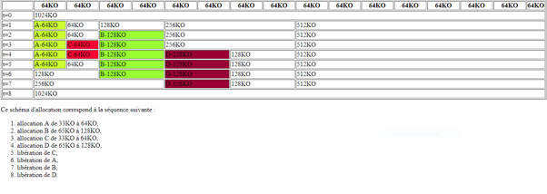
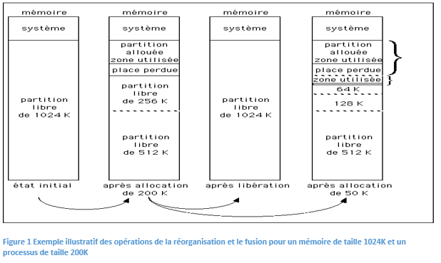

C'est un compromis entre partitions de tailles fixes et partitions de tailles variables. La mémoire est allouée en unités qui sont des puissances de 2. Initialement, il existe une seule unité comprenant toute la mémoire. Lorsque de la mémoire doit être attribuée à un processus, ce dernier reçoit une unité de mémoire dont la taille est la plus petite puissance de 2 supérieure à la taille du processus. S'il n'existe aucune unité de cette taille, la plus petite unité disponible supérieure au processus est divisée en deux unités "siamoises" de la moitié de la taille de l'original. La division se poursuit jusqu'à l'obtention de la taille appropriée. De même deux unités siamoises libres sont combinées pour obtenir une unité plus grande.
Une case memoire de taille 2^n telle que n est un entier
la taille est la plus petite puissance de 2 supérieure à la taille du processus.(ex pour taille=20ko la taille convenable=32)
le gestionnaire de la mémoire garde une trace des partitions occupées et des partitions libres. Une solution consiste à maintenir deux listes dont l'une est destinée aux partitions occupées et l'autre aux partitions libres ou chaque élément de la liste contient la taille ,l’adresse début et l’identifiant de la partition.
C’est une structure de file contenant les processus chargés par l’utilisateur
Si la partition qui a la taille convenable n'existe pas on cherche une partition de taille est la plus petite puissance de 2 supérieure à la taille convenable calculé, on subit des divisions succecive de la partition initiale par 2 jusqu'a l’obtention d'une partition de la taille convenable désirée.
Si l’OS trouve la partition convenant ou si la taille de processus est supérieur à celle de la mémoire ,il se défile .Sinon le processus reste dans la file
-C'est l'ajoute de processus dans une partition dans la mémoire centrale dans l’emplacement retourné par l'opération de recherche.
-a la fin de l’insertion son temps d’execution se lance
La libération se produit quand un processus est évacué (quand le temps d’exécution se termine) de la MC. Pour accoler la partition libéré à un voisin, on examine sa adresse : si c'est une puissance de 2, elle peut se coller au suivant, sinon au précédent. 
Avantage principal : pas besoin de compactage, pas besoin déplacer les programmes en mémoire.
-je vais encore cherchée .